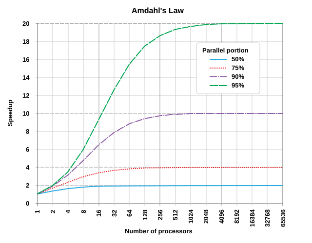

An introduction to parallelism
Last updated on 2026-06-11 | Edit this page
Overview
Questions
- What is the difference between task and data parallelism?
- How does Amdahl’s Law constrain the maximum speedup from parallelism?
- What is a data race and how do you avoid one?
Objectives
- Identify “embarrassingly parallel” problems.
- Define and identify a data race.
- Use Numba’s
@njitandprangeto parallelise Python loops on the CPU.
Why go parallel?
The short answer is speed.
You’ve probably heard of Moore’s Law, the observation that the number of transistors in a CPU doubles every two years. Up until the early 2000s, this law held true for the single-core CPUs of the time. Processor speeds increased from being measured in mere kHz, to MHz and finally to GHz. But physical limitations, and in particular power draw and heat, put a stop to those increases. CPU cores today have clock speeds measured in the same single digit GHz range as they did 25 years ago (with only marginal gains coming from instruction efficiencies).
Moore’s Law has continued unabated, but those extra transistors have spilled over into multicore CPUs and GPUs. Serial programs that execute one instruction at a time gain nothing from this shift. Increasing performance must come instead through parallelism: doing more work simultaneously, rather than doing each piece of work faster.
GPUs take this to an extreme. GPU parallelism trades latency for throughput: any single GPU core is considerably slower than a modern CPU core, but a GPU can run tens of thousands of tasks simultaneously. If your problem can be decomposed into many independent units of work, a GPU can process all of them in far less total time than a serial CPU could manage.
Amdahl’s Law
Amdahl’s Law formalises what is a very obvious observation. Consider an example where 80% of your computation is parallelisable. Then no matter how many threads you throw at a problem, that remaining 20% represents a hard floor. With only 4 cores, the actual speedup is closer to 2.86x — significantly less than the 4x you might naively expect.
More formally, the speed up, \(S\), is given by:
\[S = \frac{1}{(1 - p) + \frac{p}{N}}\]
where \(p\) is the fraction of the program that can be parallelised, and \(N\) is the number of parallel execution units (cores, threads, etc.).

Credit: Daniels220 at English Wikipedia
The practical takeaway: parallelism delivers the most benefit when the parallelisable portion of your code is both large and dominates the runtime. If your bottleneck is I/O or your algorithm is principally serial in nature, throwing more cores at it will do little.
Challenge
Think about your own code: which parts are parallelisable and which are fundamentally serial? Can you provide an estimate of the kinds of speedup you could expect?
Task parallelism versus data parallelism
Parallel code comes in two principal forms.
Task parallelism
Task parallelism divides work into different types of jobs. Each task functions autonomously and relies on communication between tasks to coordinate.
Example: Consider building a bike: one person assembles frames, another builds tyres, and a third puts it all together. This series of specialised tasks is one form of task parallelism known as pipelining. Another is a worker pool: each person builds a complete bike from scratch, but (possibly) to a different customer specification.
Task parallelism requires careful coordination — semaphores, mutexes, locks, message passing, and other synchronisation primitives. This coordination is a common source of bugs.
Task parallelism is the principal model of threaded operations on the
CPU (e.g., Python’s threading or
multiprocessing modules, or C’s OpenMP tasks).
Data parallelism
Data parallelism applies the same computation to many independent pieces of data. Each thread performs identical work on variable inputs.
Example: Applying a filter to every pixel in an image. The filter is the same; the pixel data differs.
Data parallelism is implemented in hardware on the CPU as “single instruction, multiple data” (SIMD) — for example, AVX or SSE instructions that operate on vectors of data within a single CPU register. On the GPU it is implemented as “single instruction, multiple thread” (SIMT) — the same concept scaled to tens of thousands of threads.
This programming model is quite restrictive:
- The computation must be identical for each data element.
- Communication between threads is very limited; each thread should proceed independently.
- Threads ideally proceed in lockstep — branches that cause threads to diverge can be costly.
GPUs are built around data parallelism and derive much of their speed advantage from the restrictive model and the simplicity it affords to both the hardware and software implementations.
Throughout this workshop we focus exclusively on data parallelism. The GPU is a data parallel machine, and the kernels you will write are data parallel kernels.
An introduction to Numba
To experiment with data parallelism on the CPU before moving to the GPU, we are going to use Numba. Numba is a just-in-time (JIT) compiler that translates annotated Python code into fast, machine-level code.
JIT compilation means that the translation happens at runtime: the first time a decorated function is called, Numba compiles it based on the argument types. Subsequent calls reuse the compiled version, so the compilation overhead is paid only once. The same JIT mechanism is used later when we write GPU kernels — the kernel is compiled to CUDA code on first call and cached thereafter.
Numba will be fundamental to our later workflows for writing GPU kernels: we first write the kernel on the CPU, verify that it works when run in parallel in Numba, and finally shift the code onto the GPU.
The JIT compiler used in Numba (and later in CUDA) compiles code at
the function boundary. When the function is first called, the compiler
will first inspect the types of each of the function’s arguments
(e.g. int, float, or perhaps
np.array(dtype=complex)). Based on these input types, the
types of the whole function are then inferred and finally the
function is compiled to machine code. This compilation takes a little
time (a few hundred ms or so), but only needs to be done once. Next time
the function is called, and the types match, the cached function will be
used.
You might also sometimes see @njit code with type
annotations in the decorator. Whilst these have no effect on performance
they may be useful as documentation or in ensuring argument types match
expectations.
The @njit decorator
The simplest way to use Numba is the @njit decorator,
which compiles a function into optimised machine code:
PYTHON
from numba import njit
import numpy as np
@njit
def add(xs, ys, zs):
for i in range(len(xs)):
zs[i] = xs[i] + ys[i]
N = 1_000_000
xs = np.random.normal(size=N)
ys = np.random.normal(size=N)
zs = np.empty(N)
add(xs, ys, zs)
np.testing.assert_allclose(zs, xs + ys)The function looks like ordinary Python, but after JIT compilation it runs at near-C speed. Numba supports a substantial (but limited) subset of Python: loops, conditionals, numpy array access, and many math functions. It does not support most Python object-oriented features or dynamic typing.
Note that we allocated the memory (xs, ys,
and zs) outside the function. Just as we will see
later with CUDA kernels, it is best to pre-allocate Numba arrays in
regular Python and pass them in as arguments, with one of those
arguments typically used to write the function output.
Parallel loops with prange
Numba’s prange (parallel range) is the easiest way to
write data parallel code. It tells Numba to distribute each of the loop
iterations across CPU threads:
PYTHON
from numba import njit, prange
import numpy as np
@njit(parallel=True)
def add(xs, ys, zs):
for i in prange(len(xs)):
zs[i] = xs[i] + ys[i]
N = 1_000_000
xs = np.random.normal(size=N)
ys = np.random.normal(size=N)
zs = np.empty(N)
add(xs, ys, zs)
np.testing.assert_allclose(zs, xs + ys)Two things changed here:
- We use
prangefor the loop instead of the regularrange - We set
parallel=Truein the decorator
Each iteration of the loop is independent — thread i
reads from and writes to index i, and no other thread
touches that index. This is the hallmark of a good data parallel
problem: the work is decomposed into independent units that can proceed
in any order.
Keep in mind that while prange looks like
range the iterations are not guaranteed to execute in
order, nor are they guaranteed to execute all at once. Numba decides how
to distribute the work across available CPU threads.
Challenge
Write a prange-parallel function that computes the
element-wise square root of an array. Verify correctness against
numpy.sqrt.
The pitfalls of parallelism
Parallel code promises increased performance but it comes with some real costs too. For example:
- Not everything parallelises. Some parts of your algorithm may inherently depend on results from earlier steps. These inherently serial aspects of your code place strict limits on the effects of parallelisation (see Amdahl’s law).
- Parallel code is harder to reason about. Parallel code is usually more complex to write. It is also harder to understand: with multiple threads executing at once, the order of operations is no longer guaranteed.
- More complexity means more bugs. Parallelism introduces an entirely new class of errors — data races — that appear when threads compete for shared resources.
- Parallel code introduces its own costs. There is an overhead cost to managing and scheduling multiple threads; and there can arise resource bottlenecks for memory or I/O.
Something that we will stress repeatedly throughout this course is that you must carefully weigh these costs against any possible performance gains. Be selective in what is parallelised, and always consider performance improvements in terms of the lifecycle of the entire program (and that includes development time too!).
Data races
The most insidious class of bugs in parallel code is the data race. A data race occurs when two or more threads access the same memory location concurrently, and at least one of them is writing — with no synchronisation between them.
Consider this attempt at a parallel sum:
PYTHON
@njit(parallel=True)
def racy_sum(xs):
# We initialise x_sum as a single element array to stop Numba from fixing our
# race condition. If we used a scalar value, e.g. by initialising x_sum = 0;
# then Numba will secretly fix our race condition.
x_sum = np.zeros(1)
for i in prange(len(xs)):
x_sum[0] += xs[i]
return x_sum[0]
xs = np.ones(1_000_000)
print("Sum:", racy_sum(xs))
# Expected: 1000000.0
# Actual: ? (likely wrong, and varies each run!)The problem is that x_sum[0] += xs[i] is not a single
operation — it is three:
-
Read the current value of
x_sum[0]. -
Add
xs[i]to it. -
Write the result back to
x_sum[0].
With multiple threads executing these steps simultaneously, threads can read a stale value before another thread has written its update. The result is lost, and the final sum is incorrect — and nondeterministic, varying from run to run.
Race conditions occur in any situation where multiple threads access shared and mutable state of some kind.
Challenge
Run the racy_sum function several times. Does it always
return the same result? Does the result change if you increase the size
of the input array?
One approach to resolving this problem is to give each thread its own accumulator:
PYTHON
from numba import njit, prange, get_num_threads, get_thread_id
@njit(parallel=True)
def safe_sum(xs):
# Each thread gets its own slot
x_sums = np.zeros(get_num_threads())
for i in prange(len(xs)):
x_sums[get_thread_id()] += xs[i]
# Serial reduction of per-thread sums
return x_sums.sum()
xs = np.ones(1_000_000)
print("Sum:", safe_sum(xs)) # 1000000.0 — correct and deterministicEach thread writes only to its own index, so there is no contention. The final serial reduction is cheap because there is one entry per CPU thread (typically fewer than 64).
Performance overhead
Parallel code doesn’t come for free. In fact, sometimes throwing more threads at a problem can make things slower.
The types of overhead differ between CPU and GPU. When using CPU-backed threads, some of the costs include:
- Thread spawning: which involves creating a thread and allocating it some initial memory
- Context switching: when there are more threads than cores, the host OS will periodically suspend threads to “fairly” let each thread advance its work
- Communication overhead: all higher level communication methods are built on a toolbox of atomics, locks, semaphores and condition variables and these have a non-negligible overhead
On the GPU the costs are different mostly owe to the fact that a CPU (the “host”) and the GPU (the “device”) are physically distinct. Some of these costs include:
- Memory transfers: GPUs have their own memory that is separate from the host and it takes time to transfer back and forth
- Command latency: telling the GPU what to do and transferring kernels has some associated latency
- Synchronisation and communication: a GPU has its own synchronisation primitives and a limited ability to communicate, both of which have a cost
When designing GPU code you must ensure that the computational benefits dwarf the associated costs of memory transfers and ensure your algorithm uses synchronisation sparingly.
In addition, your algorithm may also be slowed down by resource contention. This occurs when different threads all attempt to access a single resource of some kind, perhaps a file on disk, a network resource, or even to access memory. Slow downs due to resource contention can sometimes be non-linear (known as performance cliffs).
Code complexity
Serial code is very easy to reason about: first this happens, then this, and finally that. Under the hood, the compiler may perform all sorts of optimisations (e.g. rearranging the order of instructions or pre-emptively executing a conditional branch) but it does this whilst guaranteeing that these are invisible within the thread.
Parallel code tends to be much more complex:
- Each thread is doing only part of the overall computation
- You can no longer guarantee the ordering of operations: threads may start, suspended, and stop at different times
- Compiler optimisations become visible between threads
- Significant programmer work is required to reason about and handle synchronisation
These complexities mean that bugs are more likely, and you must weigh this against the performance benefits you expect.
We recommend to always write your algorithm in a single threaded, serial form first, and use this to test your parallel code later for correctness.
Challenge
Consider the following simple Python loops. Which of these is safe to
parallelise with prange, and if not, why not.
PYTHON
# A
for i in range(len(xs) - 1):
ys[i] = xs[i] ** 2 + xs[i + 1]**2
# B
for i in range(1, len(xs)-1):
ys[i] = (xs[i-1] + xs[i+1]) / 2 # read from xs, write to ys
# C
for i in range(len(xs)):
if xs[i] > threshold:
indices.append(i)
# D
x_min = xs[0]
for i in range(len(xs)):
if xs[i] < x_min:
x_min = xs[i]
# E
for i in range(len(xs)):
if xs[i] > 0:
ys[i] = math.sqrt(xs[i])- A is safe: threads read from the same values, but since these are not changed this is not a race condition.
- B is safe: reads and writes to different arrays.
- C is not safe: appending to an array mutates shared state.
- D is not safe: there is a race condition on the shared and mutable
x_minvalue. - E is safe: conditional is per-thread, no shared state.